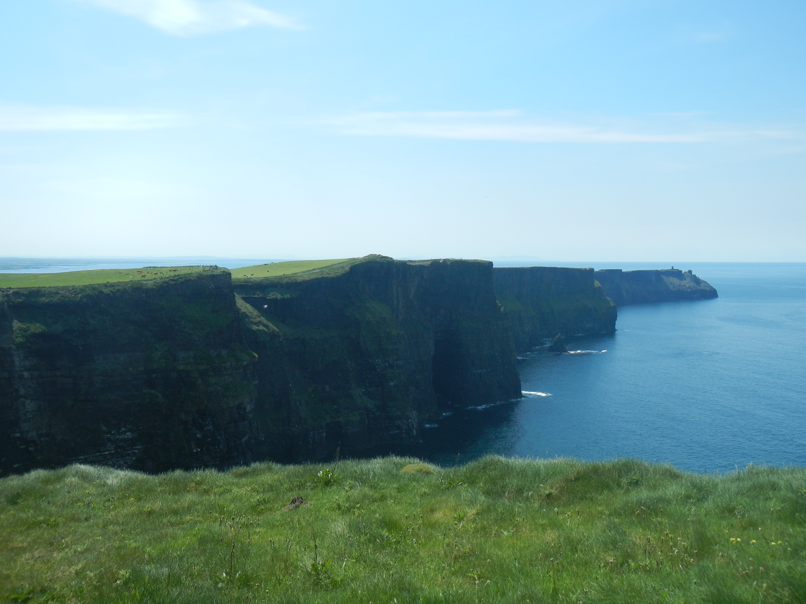

Cliffs of Moher
The Cliffs of Moher is one of the most famous spots in all of Ireland to take in the views of the western coast of the island. I was very fortunate to go on a perfect, clear day, so the views were absolutely incredible. I chose one direction to walk along and went as far as I could in the short time that I was able to visit. The further you go down the path, the more dangerous and less accessible it is; however, there are still spots to take in the views early on if you cannot or do not want go too far.